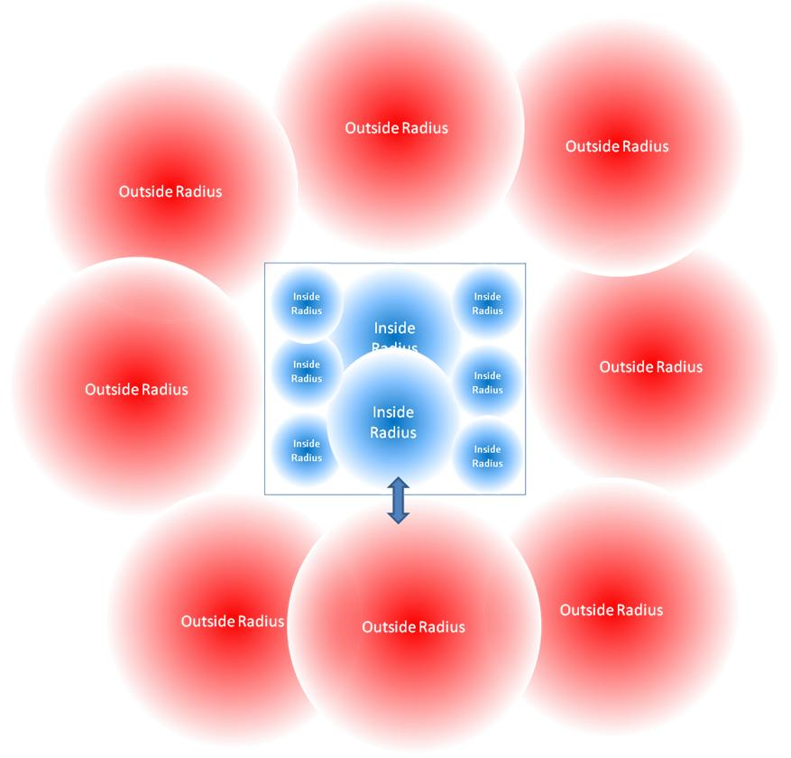

UDN
Search public documentation:
UsingAmbientZonesCH
English Translation
日本語訳
한국어
Interested in the Unreal Engine?
Visit the Unreal Technology site.
Looking for jobs and company info?
Check out the Epic games site.
Questions about support via UDN?
Contact the UDN Staff
日本語訳
한국어
Interested in the Unreal Engine?
Visit the Unreal Technology site.
Looking for jobs and company info?
Check out the Epic games site.
Questions about support via UDN?
Contact the UDN Staff
环境区域
概述
- 使得当从内部到外部变换的过程中声音听上去很好。
- 降低声音设计师的工作量，因为只需要放置较少的声效 actor，只需要较少的 actor来在内部/外部空间内迭代。
- 降低了游戏系统的消耗，因为用于定义内部和外部所需的声效 actor 的数量减少了。
快速指南
- 创建一个 ReverbVolume（混响音量），在它的内部放置一个具有较大半径循环声效的 AmbientSoundSimple，在其外部放置第二个具有较大半径的 AmbientSoundSimple 循环声效。
- 打开 ReverbVolume（混响音量）属性。
- 展开 AmbientZoneSettings（环境区域设置）来显示 AmbientZone（环境区域）参数：

- 将 bInside 参数设置为真后，ReverbVolume（混响音量）便是一个激活的 AmbientZone（环境区域）。
- 将 ExteriorVolume（外部音量）设置为 .5。这是当玩家在 AmbientZone（环境区域）内部时，AmbientZone（环境区域）外部的 AmbientSounds 的最终音量。
- 将 ExteriorLPF 设置为 .5。这是当玩家在 AmbientZone（环境区域）内部时，AmbientZone（环境区域）外部的 AmbientSounds 的最终 LowPassFilter（低通道滤波器）。
- 将 InteriorVolume（内部音量）设置为 .2。这是当玩家在 AmbientZone（环境区域）外部时，AmbientZone（环境区域）内部的 AmbientSounds 的最终音量。
- 将 InteriorLPF 设置为 .2。这是当玩家在 AmbientZone（环境区域）外部时，AmbientZone（环境区域）内部的 AmbientSounds 的最终 LowPassFilter（低通道滤波器）。
- 重新构建几何体，并进入您刚刚建立的 AmbientZone（环境区域）的 ReverbVolume（混响音量）内。
- 在 AmbientZone 外部的 AmbientSoundSimple 将会把它的音量和 .5 相乘，而它的 LowPassFilter 设置为乘以 .5 以后所得的值。
- 退出 ReverbVolume（混响音量）。现在，在 ReverbVolume（混响音量）外部的 AmbientSoundSimple 被恢复为它先前的音量和 LPF 设置。现在对放置在 ReverbVolume（混响音量）内部的 AmbientSoundSimple 应用一个音量乘数 .2 和一个 LPF 乘数 .2，这样便可以使它变得非常的静。
目前 AmbientZone 存在的问题

解决方案： Ambient Zones（环境区域）
 这里是 AmbientZone 体积的行为：
这里是 AmbientZone 体积的行为： - 当玩家在 AmbientZone 的外部时，则对放置在 AmbientZone 内部的 SoundActors 应用一个 volume（音量）乘数和 LPF 影响（这些值定义在 AmbientZoneSettings 中）。
- 当玩家进入到 AmbientZone 的内部时，放置在 AmbientZone 内部的 SoundActors 将会在特定音量和 LPF 的淡入时间过程中音量和 LPF 乘数将返回到 1.0。同时，所有放置在 AmbientZone 外部的 SoundActors 将会在特定音量和 LPF 的淡出时间过程中对它们应用一个音量和 LPF 乘数。其次，音量、LPF 以及淡出时间的值都在 AmbientZoneSettings 进行定义。
- 当玩家退出 AmbientZone 时，在 AmbientZone 外部的 SoundActors 将会使用先前的淡入淡出时间内返回到它们先前的默认值，而放置在 AmbientZone 内部的 SoundActors 将会通过 AmbientZone 的 AmbientZoneSettings 来改变音量乘数和 LPF 值。
| 设置 | 使用 |
|---|---|
| bInside | 是否打开这个体积的 AmbientZone 功能 (True, False)。如果这个参数设置为 False（假），AmbientZone 体积将会默认地作为一个新的 'ExteriorVolume（外部体积）'。 |
| ExteriorVolume | （当玩家在 AmbientZone 内部时，外部声音的最终音量） |
| ExteriorTime | （淡入淡出到一个新的外部音量所需的时间，以秒为单位） |
| InteriorVolume | （当玩家在 AmbientZone 外部时，内部声效的最终音量） |
| InteriorTime | （淡入淡出到一个新的内部音量所需的时间，以秒为单位） |
| ExteriorLPF | （当玩家在 AmbientZone 内部时，应用到外部声效的低通滤波器（最大的 LPF 为 0.1） |
| ExteriorLPFTime | （淡入淡出到新的低通滤波器级别所需的时间，以秒为单位） |
| InteriorLPF | （当玩家在 AmbientZone 外部时，应用到外部声效的低通滤波器（最大的 LPF 为 0.1） |
| InteriorLPFTime | （淡入淡出到新的低通滤波器级别所需的时间，以秒为单位） |
实现指南实例
城市饭店实例
地图中包含一个饭店区域，饭店的们朝向城市的街道打开着。当玩家在饭店外面时，它们可以听到街道上的交通的声音，饭店内的声音音量很低只能稍微的听见一点。当玩家进入到饭店时，饭店内的声音变大并且更加清楚，街道上的交通声变得安静甚至听不到交通的声音。当玩家离开饭店时，又恢复到先前的声音平衡。要实现这种效果：- 在饭店内部创建和饭店大小一样的 Reverb Volume（混响音量）。
- 在 Reverb Volume（混响音量）属性中打开 AmbientZoneSetting 设置。
- 设置 InteriorVolume 为 .6，InteriorLPF 为 .4。
- 设置 ExteriorVolume 为 .4，ExteriorLPF 为 .2。
- 放置一个具有较大半径的 AmbientSoundSimple 来播放街道上的交通声。
- 放置一个具有较大半径的 AmbientSoundSimple 来播放饭店内部的声音。
- 重新构建您的地图几何体。这将强制 Reverb Volume（混响音量）检查在其内部有哪些 SoundActors。
- 进入并退出 Reverb Volume（混响音量）来听取声音的变化。在这个例子中，所有的淡入淡出时间都设置为默认值 .5。
垂直空间实例
由于声音半径是球形的，所以当它们垂直地堆叠在闭合的内部空间时便会产生问题。AmbientZones 可以帮助解决这个问题；这里是一些实例。- Multiple-story buildings（多层建筑）： 大半径的环境声音可以放置到建筑物的每个垂直层上，且不要产生上层和下层的声音渗透。
- Bridges（桥）： 在桥的下面和上面放置为一个的环境声音和混响，且不要产生桥上下的声音渗透。
墙壁控制实例
Walls（墙壁）： 把环境声音放置到房间内的墙壁上，如果玩家在墙壁的外侧时则停止声音。特殊区域混合控制实例
城市街道细节： 当您走近您感兴趣的声音点时，AmbientZones 允许您控制车辆和城市喧闹声的混合。比如，您可以在接到小贩附近放置一个 AmbientZone，当您进入那个 AmbientZone 时，降低城市中其它声音的音量。实现技巧
仅应被分配给 Ambient（环境）声音类别的 AmbientSoundSimple actor 和 SoundCue 才能受到 AmbientZone 影响。
把 AmbientZone 的音量和 LPF 改变应用到 AmbientSoundSimple actor 上，比如：- AmbientSoundSimple
- AmbientSoundNonLoop
- AmbientSoundSimpleToggleable
- AmbientSound
- AmbientSoundMoveable
AmbientZones 的默认值
- 可以在 WorldInfo 属性中进行设置，在 WorldInfo->DefaultAmbientZoneSettings 下。
多个 AmbientZones 和大半径 SoundActors 的内部行为
关于 AmbientZones 还有一个方面需要记住的是，如果 SoundActor 的衰减半径足够得大以至于可以同时在多个 AmbientZones 内听见，那么在这些所有 AmbientZones 上的 InteriorVolume 和 InteriorLPF 是叠加的。这个行为的目标是通过进入一个不同的 AmbientZone 来避免内部音量和 LPF 被覆盖。所以，如果您已经设置当玩家在汽笛 AmbientZone 的外部时汽笛的音量变低并且具有 LPF，那么如果您进入到另一个具有不同 ExteriorVolume 和 ExteriorLPF 设置的 AmbientZone 时，汽笛的将保持安静并且具有它的 LPF。这个行为模仿了现实世界中的行为，并且和 AmbientZone 的行为保持一致。下面是有关这个行为的一个示例：- 在关卡中有两个 AmbientZones：AmbientZone A 和 AmbientZone B。
- AmbientZone A 包含 SoundActor 1，它可以在较大的衰减半径内播放循环音乐（半径足够的大，以至于可以在 AmbientZone B 听到声音），并且将 InteriorVolume 设置为.5，InteriorLPF 设置为 .4。
- AmbientZone B 的 ExteriorVolume 为 1.0，ExteriorLPF 为 1.0。
- 当玩家在 AmbientZone A 的外部时，他听到 SoundActor 1 正在播放 InteriorVolume 为 .5 而 InteriorLPF 为 .4 的声音。
- 现在玩家进入到 AmbientZone B。 通过 AmbientZone 为 SoundActor 1 设置的 InteriorVolume 和 InteriorLPF 将会被 AmbientZone B 中设置的 ExteriorVolume 值 1.0 和 ExteriorLPF 值 .5 相乘。这将会导致玩家进入到 AmbientZone B 时听到 SoundActor 1 的音量为 .5 而 LPF 为 .2。
bInside 设置
- 这是个 真/假 设置，当它被激活时，它用于定义 AmbientZone。默认情况下，当玩家在任何 AmbientZones 之外时，所有的环境声音 actor 将会播放默认的音量为 1.0 而 LPF为 1.0 的声音。
Inside? 概念，因为现在功能中包括将 AmbientZone 音量设置为 'Inside'。